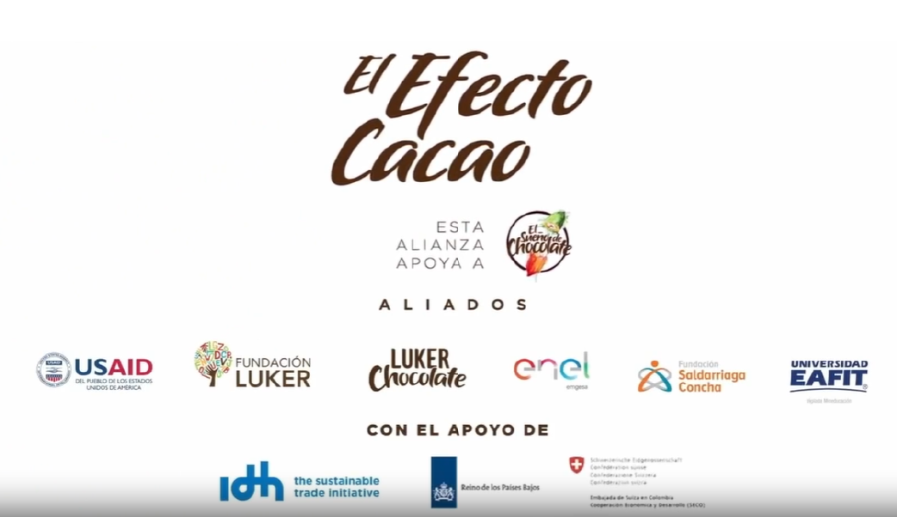

Conexión Emocional con las audiencias
Las historias pueden tocar corazones y generar un vínculo emocional profundo, creando mayor resonancia en la audiencia. Este vínculo puede traducirse en el involucramiento, mayor apoyo y financiamiento para las iniciativas de desarrollo.
Un ejemplo de esta conexión es el GDA El Efecto Cacao de USAID/Colombia, el cual se centra en mejorar la producción y los ingresos de los pequeños agricultores de cacao.
Visualización del Impacto
A través de historias visuales y testimonios, se pueden mostrar de manera tangible los cambios positivos y los desafíos superados. Esto hace que el impacto de las iniciativas de desarrollo sea más real y comprensible. Ver los rostros y escuchar las voces de aquellos que se benefician de los proyectos ayuda a humanizar los datos y estadísticas, creando una narrativa más convincente y poderosa.
Por ejemplo, USAID utiliza plataformas como Exposure para contar historias que humanizan los datos y hace tangible el impacto en la vida de las personas.

Transparencia y Rendición de Cuentas
Narrar historias de manera transparente ayuda a construir confianza y credibilidad entre donantes, socios y participantes. Mostrar el uso efectivo de los recursos y el alcance de los resultados esperados fortalece la confianza y el uso de las prácticas de rendición de cuentas y la transparencia.
Como ejemplo, podemos destacar la Actividad Juntos por la Transparencia (PfT), una iniciativa que promueve la participación cívica y fortalece la capacidad de los actores locales en Colombia para avanzar en la transparencia y la rendición de cuentas. PfT trabaja con una amplia gama de contrapartes tanto públicas como privadas, incluyendo medios de comunicación como La Silla Vacía y organizaciones como Transparencia por Colombia. Exl programa involucra a actores del sector privado y público, fomentando un diálogo público transparente y ayudando a que los ciudadanos estén mejor informados sobre cómo se gestionan los recursos y cómo pueden participar en procesos de vigilancia social.